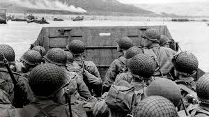
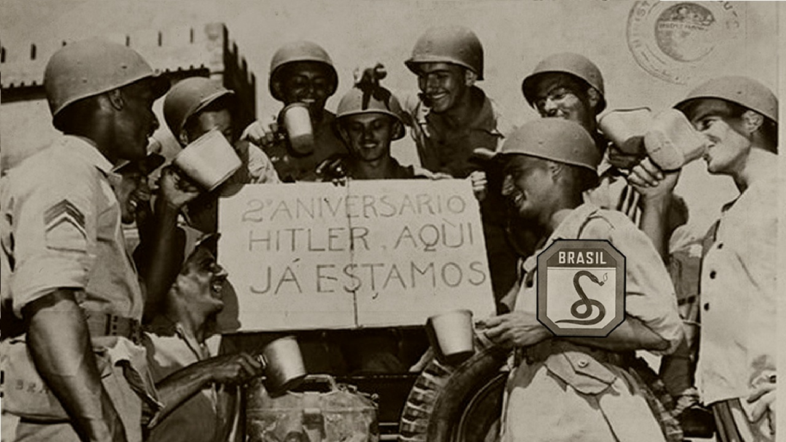
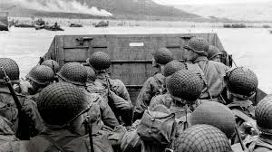
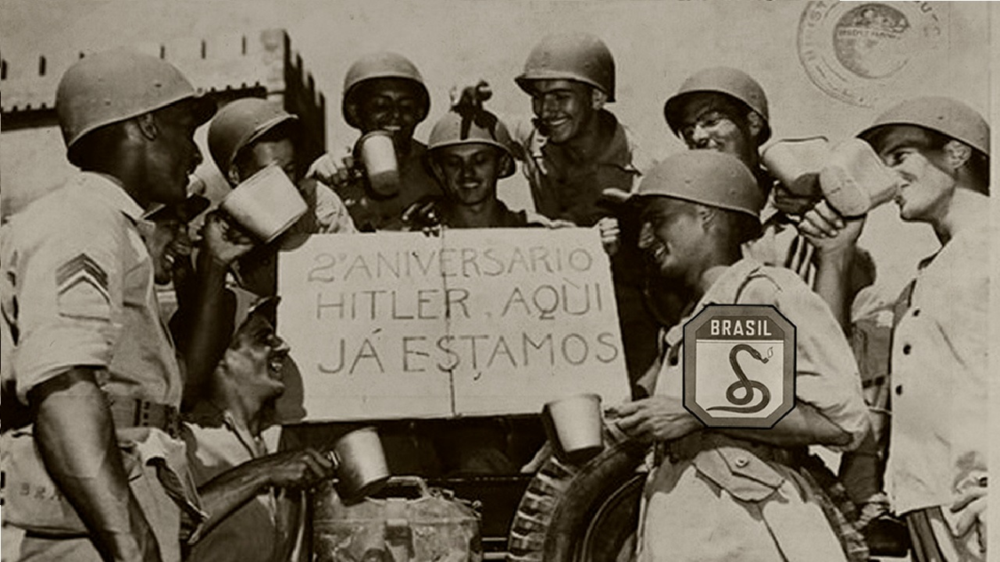

Sobre nós
Na Toy Fantasy, nossa missão é oferecer uma experiência única e imersiva para entusiastas da história, colecionadores e curiosos. Somos uma empresa especializada em artigos históricos da Segunda Guerra Mundial, com foco especial em brinquedos que resgatam a memória e os acontecimentos dessa época que mudou o mundo.
A Segunda Guerra Mundial (1939-1945) foi um dos conflitos mais impactantes da história da humanidade, afetando milhões de vidas e transformando nações inteiras. Durante esses anos, a guerra moldou a economia, a cultura e o avanço da tecnologia. Mesmo em tempos difíceis, as crianças encontravam refúgio na imaginação, e os brinquedos, muitas vezes inspirados nos eventos do conflito, foram uma forma de preservar a esperança e a criatividade. Hoje, esses itens são mais do que simples objetos de coleção: eles são fragmentos de um passado que continua a nos ensinar e inspirar.
Aqui na Toy Fantasy, acreditamos que colecionar é mais do que um hobby: é uma forma de reviver o passado e preservar a história para futuras gerações. Nossos brinquedos históricos não são apenas objetos para serem admirados, mas também ferramentas educacionais que aproximam crianças e adultos do fascinante universo da Segunda Guerra Mundial.
Se você é um colecionador apaixonado, um estudante de história, ou apenas alguém que busca algo único e cheio de significado, nós temos o artigo perfeito para você. Explore nossa loja e faça parte dessa jornada pelo tempo!